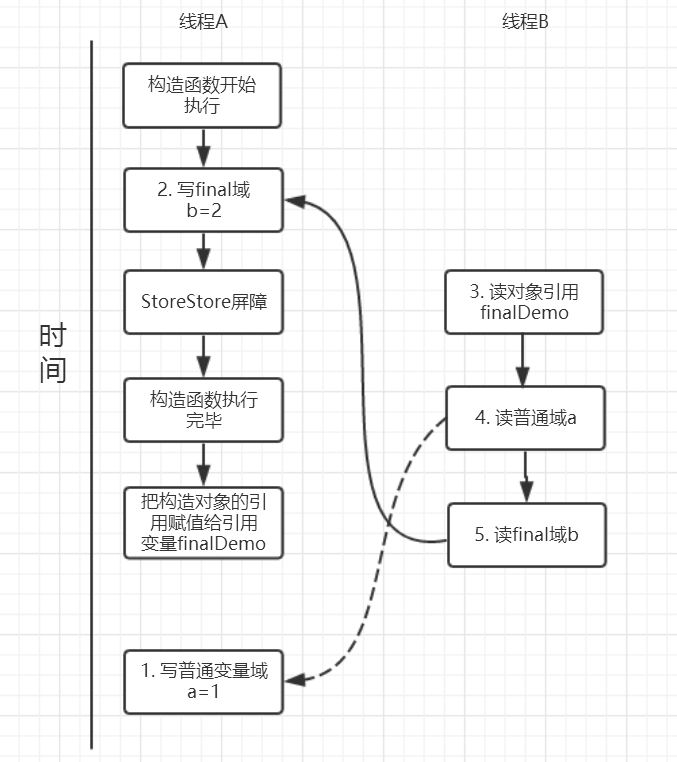

final

基本使用
修饰类
当某个类被定义为 final 时，表明这个类不能被继承。
注意：final 类中所有的方法都隐式为 final，因为无法覆盖他们，所以 final 类中给任何方法添加 final 关键字都是没有意义的。
可以使用组合的方式扩展 final 类。比如我们想写个 MyString 复用 String 类的方法，并新增一个 toMyString() 方法。
1 | class MyString{ |
修饰方法
表示方法不可被覆盖，但是可以被重载。
private 方法是隐式的 final。
private final
类中所有 private 方法都隐式的指定为 final，由于无法取用 private 方法，所以也就不能覆盖它。
修饰参数
Java 允许在参数列表中以声明的方式将参数指明为 final，这意味这你无法在方法中更改参数引用所指向的对象。这个特性主要用来向匿名内部类传递数据。
修饰变量
对于一个 final 变量，如果是基本数据类型的变量，则其数值一旦在初始化之后便不能更改；如果是引用类型的变量，则在对其初始化之后便不能再让其指向另一个对象。
编译期常量、非编译器常量
1 | public class Test { |
k的值由随机数对象决定，所以不是所有的final修饰的字段都是编译期常量，只是k的值在被初始化后无法被更改。
static final
一个既是 static 又是 final 的字段只占据一段不能改变的存储空间，它必须在定义的时候进行赋值，否则编译器将不予通过。
1 | import java.util.Random; |
1 | k=2 k2=7 |
我们可以发现对于不同的对象 k 的值是不同的，但是 k2 的值却是相同的，这是为什么呢? 因为 static 关键字所修饰的字段并不属于一个对象，而是属于这个类的。也可简单的理解为 static final 所修饰的字段仅占据内存的一个一份空间，一旦被初始化之后便不会被更改。
blank final
Java 允许生成空白 final，也就是说被声明为 final 但又没有给出定值的字段,但是必须在该字段被使用之前被赋值，这给予我们两种选择：
- 在定义处进行赋值(这不叫空白final)
- 在构造器中进行赋值，保证了该值在被使用前赋值。
这增强了 final 的灵活性。
1 | public class Test { |
可以看到 i2 的赋值更为灵活。但是请注意，如果字段由 static 和 final 修饰，仅能在定义处赋值，因为该字段不属于对象，属于这个类。
final 域重排序
基本类型
1 | public class FinalDemo { |
假设线程 A 在执行 writer() 方法，线程 B 执行 reader() 方法。
写 final 域重排序规则
写 final 域的重排序规则禁止对 final 域的写重排序到构造函数之外，这个规则的实现主要包含了两个方面：
- JMM 禁止编译器把 final 域的写重排序到构造函数之外；
- 编译器会在 final 域写之后，构造函数 return 之前，插入一个 storestore 屏障。这个屏障可以禁止处理器把 final 域的写重排序到构造函数之外。
我们再来分析 writer 方法，虽然只有一行代码，但实际上做了两件事情：
- 构建了一个 FinalDemo 对象；
- 把这个对象赋值给成员变量 finalDemo。
我们来画下存在的一种可能执行时序图，如下：

由于 a，b 之间没有数据依赖性，普通域(普通变量) a 可能会被重排序到构造函数之外，线程 B 就有可能读到的是普通变量 a 初始化之前的值(零值)，这样就可能出现错误。而 final 域变量 b，根据重排序规则，会禁止 final 修饰的变量 b 重排序到构造函数之外，从而 b 能够正确赋值，线程 B 就能够读到 final 变量初始化后的值。
因此，写 final 域的重排序规则可以确保：在对象引用为任意线程可见之前，对象的 final 域已经被正确初始化过了，而普通域就不具有这个保障。比如在上例，线程 B 有可能就是一个未正确初始化的对象 finalDemo。
读 final 域重排序规则
读 final 域重排序规则为：在一个线程中，初次读对象引用和初次读该对象包含的 final 域，JMM 会禁止这两个操作的重排序。(注意，这个规则仅仅是针对处理器)，处理器会在读 final 域操作的前面插入一个 LoadLoad 屏障。实际上，读对象的引用和读该对象的 final 域存在间接依赖性，一般处理器不会重排序这两个操作。但是有一些处理器会重排序，因此，这条禁止重排序规则就是针对这些处理器而设定的。
read() 方法主要包含了三个操作：
- 初次读引用变量 finalDemo;
- 初次读引用变量 finalDemo 的普通域 a;
- 初次读引用变量 finalDemo 的 final 域 b;
假设线程 A 写过程没有重排序，那么线程 A 和线程 B 有一种的可能执行时序为下图：

读对象的普通域被重排序到了读对象引用的前面就会出现线程 B 还未读到对象引用就在读取该对象的普通域变量，这显然是错误的操作。而 final 域的读操作就“限定”了在读 final 域变量前已经读到了该对象的引用，从而就可以避免这种情况。
读 final 域的重排序规则可以确保：在读一个对象的 final 域之前，一定会先读这个包含这个 final 域的对象的引用。
引用类型
对 final 修饰的对象的成员域写操作
针对引用数据类型，final 域写针对编译器和处理器重排序增加了这样的约束：在构造函数内对一个 final 修饰的对象的成员域的写入，与随后在构造函数之外把这个被构造的对象的引用赋给一个引用变量，这两个操作是不能被重排序的。注意这里的是“增加”也就说前面对 final 基本数据类型的重排序规则在这里还是使用。这句话是比较拗口的，下面结合实例来看。
1 | public class FinalReferenceDemo { |
针对上面的实例程序，线程线程 A 执行 wirterOne() 方法，执行完后线程 B 执行 writerTwo() 方法，然后线程 C 执行 reader() 方法。下图就以这种执行时序出现的一种情况来讨论。

由于对 final 域的写禁止重排序到构造方法外，因此 1 和 3 不能被重排序。由于一个 final 域的引用对象的成员域写入不能与随后将这个被构造出来的对象赋给引用变量重排序，因此 2 和 3 不能重排序。
对final修饰的对象的成员域读操作
JMM 可以确保线程 C 至少能看到写线程 A 对 final 引用的对象的成员域的写入，即能看下 arrays[0] = 1，而写线程 B 对数组元素的写入可能看到可能看不到。JMM 不保证线程 B 的写入对线程 C 可见，线程 B 和线程 C 之间存在数据竞争，此时的结果是不可预知的。如果可见的，可使用锁或者 volatile。
关于 final 重排序的总结
按照 final 修饰的数据类型分类：
- 基本数据类型:
final域写：禁止 final 域写与构造方法重排序，即禁止 final 域写重排序到构造方法之外，从而保证该对象对所有线程可见时，该对象的 final 域全部已经初始化过。final域读：禁止初次读对象的引用与读该对象包含的 final 域的重排序。
- 引用数据类型：
额外增加约束：禁止在构造函数对一个 final 修饰的对象的成员域的写入与随后将这个被构造的对象的引用赋值给引用变量重排序。
一个有趣的现象
1 | byte b1=1; |
如果对 b1、b2 加上 final 就不会出错。
1 | final byte b1=1; |